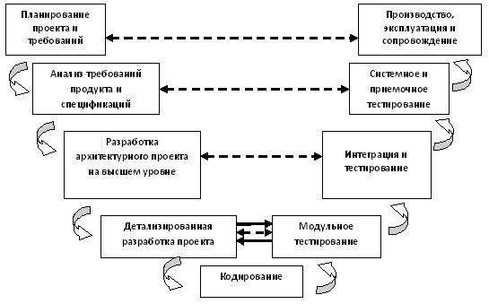

V - образная модель ЖЦ
В модели особое значение придается действиям, направленным на верификацию и аттестацию продукта. Эта модель была разработана как разновидность каскадной модели и представлена на рисунке 2.3.

Рисунок 2.3 - V - образная модель ЖЦ
Преимущества V - образной модели.
- Особое значение придается планированию.
- Определяет продукты, которые должны быть получены в результате процесса разработки.
- Предусмотрены аттестация и верификация и внешних полученных данных.
- Определение требований - перед разработкой проекта системы.
- Проектирование ПО - перед разработкой компонентов.
- Можно отслеживать ход процесса разработки.
- Проста в использовании.
Недостатки V - образной модели.
- Плохо справляется с параллельными событиями.
- Не учтены итерации между фазами.
- Поздно происходит тестирование требований.
- Не предусмотрено внесение требования динамических изменений.
- Не содержит действий, направленных на анализ рисков.
Область применения V - образной модели.
- В ситуациях, в которых информация о требованиях доступна заранее.
- В случае, когда доступными являются информация о методе реализации решения и технология.
- В системах, в которых требуется высокая надежность.